La peinture commence là où la vision s'arrête.
La surface et la matière sur lesquelles le premier regard est posé sur la toile sont selon moi les principaux et prévalents attraits de la peinture. Cette notion de surface est également le fil conducteur de ma démarche s'il en est un, tant au niveau de la forme que du contenu. À partir d'un tel thème de prédilection, tous les sujets sont possibles et ainsi l'ensemble de mon travail traite autant du paysage que du portrait, en passant par la nature morte ou la fable animalière, voire l'abstraction, formant ainsi une continuité dans un corpus d’œuvres diverses.
Formellement et intrinsèquement, les préceptes de la peinture (la couleur) sont privilégiés, et le dessin (la ligne) y tient une place prépondérante. Considérant le dessin comme l'ossature même de la peinture, l'omniprésence du trait dans mes œuvres picturales n'est donc pas anodine.
De la même façon, les lettres et les mots, signes d'écriture parfois inscrits par association libre, sont alors utilisés non seulement pour leur qualité littéraire mais également dans une intention graphique et non didactique.
À travers ma démarche figurative, dont le processus se base sur un mélange de recherches, de photographies personnelles, d'esquisses et de travail de mémoire, je tente de transposer la réalité avec un certain souci naturaliste, tout en mettant l'accent sur la face cachée des choses, sur les dessous de la matière brute, sous les repentirs, sur l'endos de la toile ou l'envers du décor.
Le choix de la peinture aujourd'hui.
Outre une nécessité personnelle pour la transcendance de l'acte de peindre, le choix de produire de la peinture aujourd'hui en est un difficile et nécessaire étant donnés: 1° la chute d'eau, 2° le gaz d'éclairage... c'est-à-dire étant donné la pollution visuelle qui nous est déversée dans un flux de lux toxique quotidien.
Par le biais de la fibre optique, l'observateur contemporain aurait semble-t-il tendance à ne plus qu'entrevoir, voire entrapercevoir, et à s'attarder de moins en moins à l'image qu'il a devant lui, étant de plus en plus conditionné à se gaver le plus rapidement possible de clichés qui s'offrent à lui de manière continue afin de pouvoir en absorber le plus possible, la quantité d'images submergeant inévitablement la qualité de contemplation et de réflexion de celles-ci.
Un flux optique incessant, propageant des futilités formatées et relayant des informations trop souvent peu pertinentes (sensationnalismes inutiles, désinformation virale, insignifiances redondantes, sollicitations publicitaires) passant dans le tamis volontaire de notre déficit d'attention collectif et dans un tel débit qu'il nous faut sans cesse se laisser glisser sans cligner des yeux à travers ce brouillard délétère étouffant afin de ne pas être bousculé dans notre quiétude généralisée.
Cette tyrannie de l'image et cette propagande de l'ignorance, par le biais de mouvements oculaires rapides, nous font alors esquiver toute réflexion en se fixant sur ces images séduisantes que l'on perçoit furtivement en imitant un sommeil paradoxal et en déroulant dans un rythme circadien le perpétuel papyrus virtuel de nos écrans aveuglants.
A contrario de toutes ces images pimpantes et clinquantes souvent produites à des fins dirigées ou uniquement commerciales auxquelles nous sommes confrontées quotidiennement, mes sujets sont choisis pour leur simplicité et sont dépeints sous leur aspect banal voire artificiel à première vue, en essayant d'y intégrer quelque élément discordant pas toujours visible au premier coup d'œil.
L'intention étant de transmettre une vision contemplative qui serait susceptible de pousser le regardeur à s'attarder dans le temps et l'espace auquel il est confronté, et éventuellement amorcer une réflexion sur son rôle d'observateur et sur sa propre perception et identité.
Ultimement, de la même façon que pour l'artiste le geste de peindre et de dépeindre donne libre cours à ses idées et l'amène souvent à se remettre en question, l’œuvre créée devrait idéalement à son tour laisser libre cours aux pensées de celui ou celle qui la regarde, voire lui ouvrir les yeux sur une réalité qu'il ou elle ne soupçonnait peut-être pas, et ce par le pouvoir de la contemplation.
A.Z.
****
EXPOSITIONS SÉLECTIONNÉES
2022
. groupe . Neighbouring / Se voisiner . Produit Rien (Montréal, Canada)
2021
. solo . TAKE OUT / À l'emporte-pièce . Produit Rien (Montréal)
2013
. groupe . Beirut Art Fair (Beyrouth, Liban)
2012
. solo . Les villes artificielles . CNAG
(Beyrouth, Liban)
2011
. groupe . CNAG Galerie Cynthia Nouhra
(Beyrouth, Liban)
. solo . Village Gallery (Toronto)
2010
. groupe . Urban Perspectives. Galerie SOTA
(Toronto)
2009
. solo . ANIMAS (du coq à l'âne) . Galerie du Viaduc
(Mtl)
. collection Colart (Mtl)
2008
. duo . Village Gallery
(Toronto)
. groupe . Espace
La Voûte (Mtl)
. duo . Keystone Art
Gallery (Calgary)
2007
. solo . State Of
The Art Gallery (Toronto)
. solo . Consulat
général de France à Montréal (Mtl)
2006
. solo . Nocturnes.
Romolo (Mtl)
2005
. groupe . Collectif imprévu.
Sablo (Mtl)
. solo . Natures mortes et autres
natures. Pavillon des arts de Sainte-Adèle (Qc)
. duo . Spaces and portraits.
Green Room (Mtl)
2004
. solo . Oniriques natures.
Galerie d’art Époque (Aylmer)
. solo . Éthersections. Ò PatroVys (Mtl)
. groupe . Trois fois Trois. Célina (Paris,Fr.)
2003
. solo . Alice et Narcisse.
Petit Alep (Mtl)
. diffusion galerie du Musée des Beaux-Arts
de Montréal (Mtl)
2002
. groupe . Gallery artists.
State Of The Art Gallery (Toronto)
. groupe . Sala Rossa (Mtl)
. solo . Borborygmes et gargarismes.
Espace Parcours (Mtl)
. groupe . Joints
Gallery (Calgary)
. groupe . Salon des refusés.
(Mtl)
. solo . Sans titre.
Arts Café (Mtl)

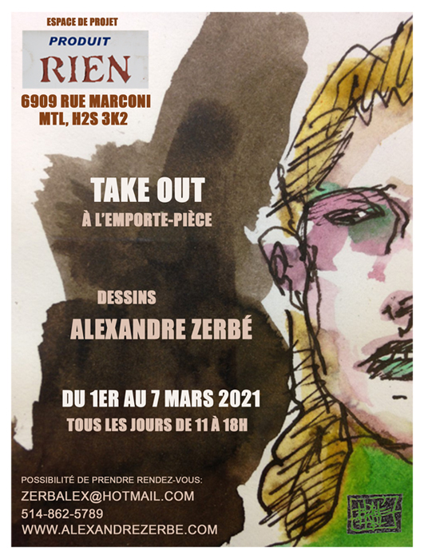

 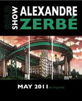
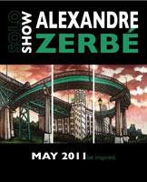
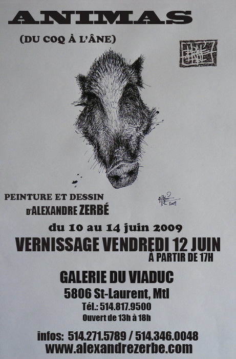
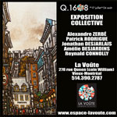 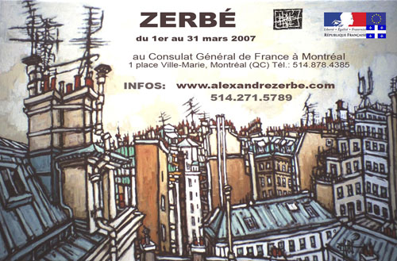
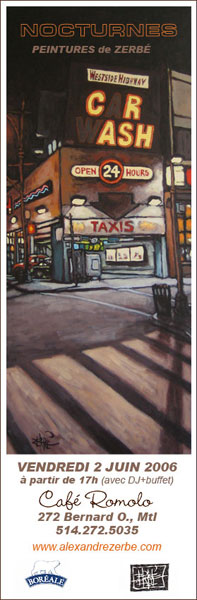
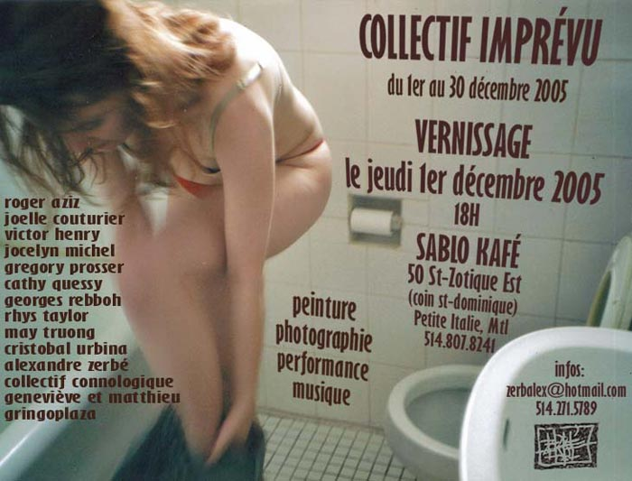 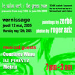
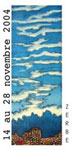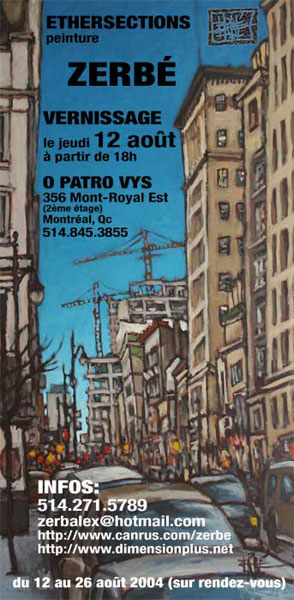
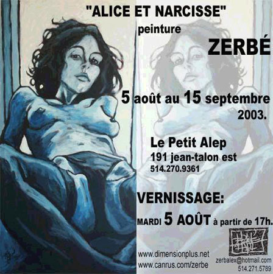
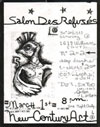
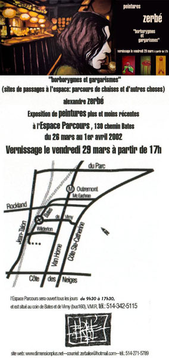


{kind=link}
{kind=link}
{kind=link}
{kind=link}
{kind=link}
{kind=link}
{kind=link}
{kind=link}
{kind=link}
{kind=link}
{kind=link}
{kind=link}
{kind=link}
{kind=link}
{kind=link}